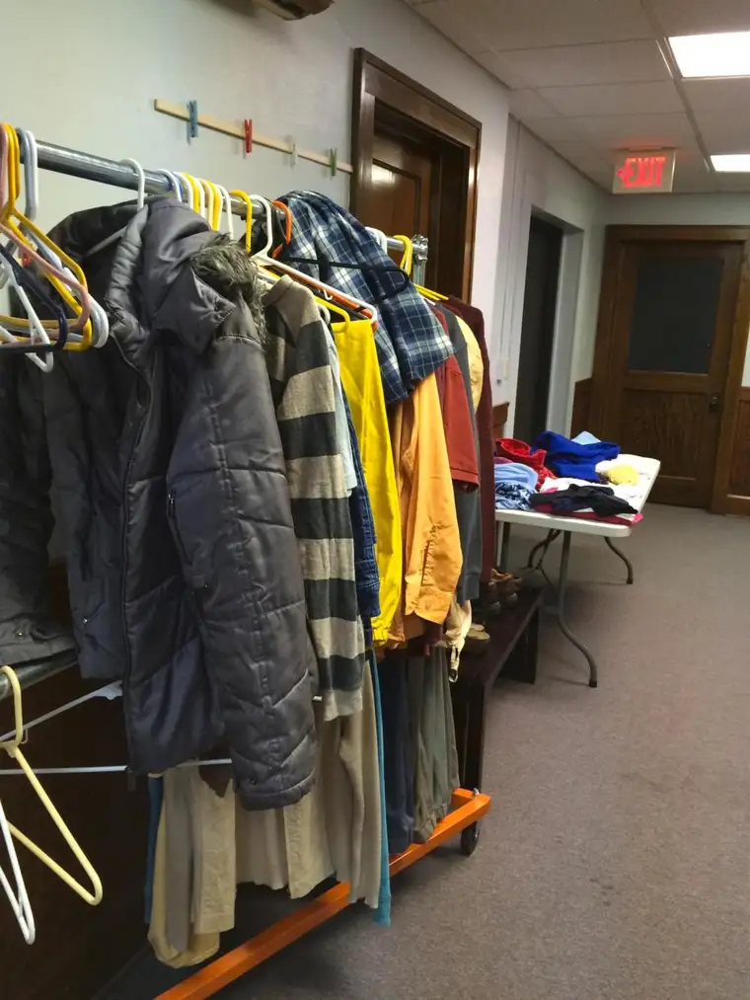

FARGO — The concept of the self-made man or woman has always seemed a bit off to Cathy Schwinden.
During her many years working in social-justice ministry, she’s peered into places that tell her otherwise.
“I think we have a tendency to lean too much on the rugged individualist,” she says. “I don’t think such a thing exists.”
Even those people who’ve always had a roof over their heads have been blessed by someone at some point, she says.
“Maybe the kids were doubled up in bunk beds, maybe they never went out to eat as a family, maybe things were lean,” she says, “but maybe they had loving parents who stuck it out no matter what happened.”
Or perhaps a teacher believed in them, or someone took a risk and offered them that first job.
“It’s not that people (who fall off the rails) are lazy or evil,” Schwinden says. “It’s really more that only by the grace of God have any of us made it through.”
Sometimes, such grace manifests through programs like the F-M Sheltering Churches project, a collaborative effort of area faith communities to provide overflow shelter to the homeless in our midst.
The project, an offshoot of the Central Cities Ministries (CCM) organization, came into being five years ago when homelessness began calling attention to itself here like never before.
Schwinden says the response by local faith communities was meant to be a temporary, five-year solution to an emergency situation.
But in that time, the community has only grown in number and diversity, and the need for warm places for those without permanent housing — especially in wintertime — has far from disappeared.
“We’re a community vastly changing,” Schwinden says, adding, that the changes have brought diversity and, often, people not accustomed to our bitter winters.
“How do we incorporate these people into this community?” Schwinden asks, calling them part of our larger family. “It’s not like we pack them a lunch and get them a Greyhound bus ticket out of town. How do we include them?”
Rather than fear the changes, Schwinden encourages the community to celebrate and embrace them. “It’s the world our children and grandchildren are living in, and it’s a blessing, not something to be afraid of.”
Seeking permanent solutions
CCM first formed in the 1970s, during more homogenous times, as a way for faith communities to combine resources. Schwinden says she’s hopeful the same determination and enthusiasm that birthed the initial efforts will propel our community forward now.
“We need to say, ‘We can tackle this. We can do better on the permanent housing end of it,’ ” she says. “No one wants little children growing up in a shelter or people not having the privacy and security of being in their own home.”
Stanley Franek works on the front lines for CCM, helping distribute emergency items to individuals struggling to survive, such as funds for threatened electricity shut-offs, rent-payment delays and gasoline for job transport.
“Distribution is where you really see what’s happening,” he says, “and the people most in need.”
He’s also been involved with Sheltering Churches, which, he notes, has offered the dual benefit of creating a greater awareness of homelessness to its volunteers.
“Over the past five years, hundreds of people have been trained and witnessed (the problem of homelessness here) firsthand,” he says.
But despite its success, the program is still a temporary solution. “Decent, affordable housing is really the key to ending homelessness,” he says. “And how that gets done, it really takes a community.”
Franek says one obstacle toward long-term solutions can come when people get fired up, then fall into complacency. “If it doesn’t affect you personally, it’s easy to go back home and forget.”
A firm commitment to short-term solutions coupled with ardent efforts toward permanent solutions need to be ongoing for the community to stabilize, he says.
“If what we read in the Bible is true, the poor are always going to be with us,” Franek adds. “And our mission is pretty clear. We’re here to serve. So how can we best do that as a community?”
Imperative act
The Rev. Michelle Webber, pastor at First Congregational United Church of Christ Church in Moorhead, inherited a spot on the board of CCM from her predecessor, fittingly so, given her passion for justice-related issues.
“It was untenable for us to think of people living on the streets in the winter, especially when we had these spaces largely sitting unused overnight,” she says of Sheltering Churches’ origins. “It was a no-brainer for pastors to say, ‘There is a life-threatening situation going on; we have a resource to help.’ ”
But current needs are “outstripping the pace of what a typical charitable organization can maintain,” Webber says. “Thankfully there are promising things happening to get people permanent housing.”
She suggests concerned citizens contact their state representatives about the permanent housing crisis and support programs like Sheltering Churches to help in the short term.
Ultimately, she adds, the injustice that keeps homelessness flourishing needs to be faced. “We’re hoping the F-M community will get fired up about affordable housing.”
Beyond that, Webber says, those who’ve experienced homelessness need to tell their stories, and the rest of us need to listen. “In reality, all of us are just one issue away from not being able to find decent housing.”
From a faith-based perspective, she says, our active response is an imperative.
“This is what real Christians do,” Webber reminds. “It’s not just providing life-saving shelter but being the face of Christ to people … People can experience what we know to be the love of God by the welcoming they experience through the churches.”
Webber welcomes new faith communities of all denominations into the CCM fold. “When the next crisis comes, we can be ready.”
“CCM has a unique constitution,” she adds. “All you have to do is show up and you’re in the conversation. Some help by pledging money, and we welcome that, too, but what’s really important is that people bring their voices.”
A Sept. 19 fundraising event involving local musicians is planned to help provide for area homeless this coming winter. Those interested in getting more involved can find out more then.
“It’s not winter yet, but we know winter is coming,” Schwinden says. “We worry about freezing toes and things that can happen in the colder months. This is an opportunity to help.”
If you go
What: “A Night of Music” to benefit Central Cities Ministries’ FM Winter Sheltering Project
When: 7 p.m. Sunday, Sept. 19
Where: Our Saviors Lutheran Church, 610 N. 13th St., Moorhead
Info: $10 per person. Featured musicians include MOOS Band, Grand Invie, Sarah Morrau, Tucker’d Out, Amanda Standalone and Brent & Uncle Karl
[For the sake of having a repository for my newspaper columns and articles, I reprint them here, with permission, a week after their run date. The preceding ran in The Forum newspaper on Sept. 10, 2016.]